I'm a software engineer who builds web apps and deploys AI features with TypeScript and Python. For Can Crops, I helped build an online storefront and made a coffee roast classifier run 9.4x faster on CPU without losing accuracy. I built Lootern, a voice-enabled AI game explorer, and published CodeAnchor, which reached 350+ weekly downloads on npm.
faris [dot] abujolban [at] gmail [dot] com
Projects
AI game explorer
Lootern
An Azure-hosted AI game explorer with text and voice chat.
Python
FastAPI
React
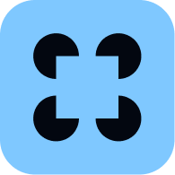
LangGraph
PostgreSQL
LiveKit
RAG
Azure
Implementation
The agent answers questions using read-only PostgreSQL queries and retrieved game documents. I added interruptible LiveKit voice conversations and evaluated document retrieval and generated answers.
ASU capstone
Can Crops
A bilingual coffee storefront and REST API built by a three-person capstone team.
TypeScript
React
Hono
PostgreSQL
PyTorch
ONNX Runtime
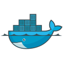
Docker
Implementation
I integrated a coffee roast classifier into the Node.js API. INT8 quantization cut CPU inference latency from 11.0 ms to 1.2 ms while retaining 99.5% accuracy on held-out data.
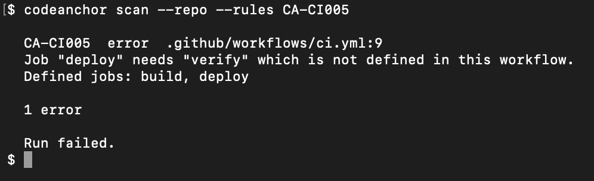
Published npm package
CodeAnchor
A published static analysis CLI that catches broken repository references and stale comments.
TypeScript
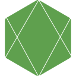
Node.js
Commander
Git
Vitest
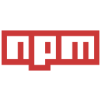
npm
Implementation
The CLI runs 67 rules across eight languages and uses Git to inspect staged changes. I wrote 647 Vitest tests.
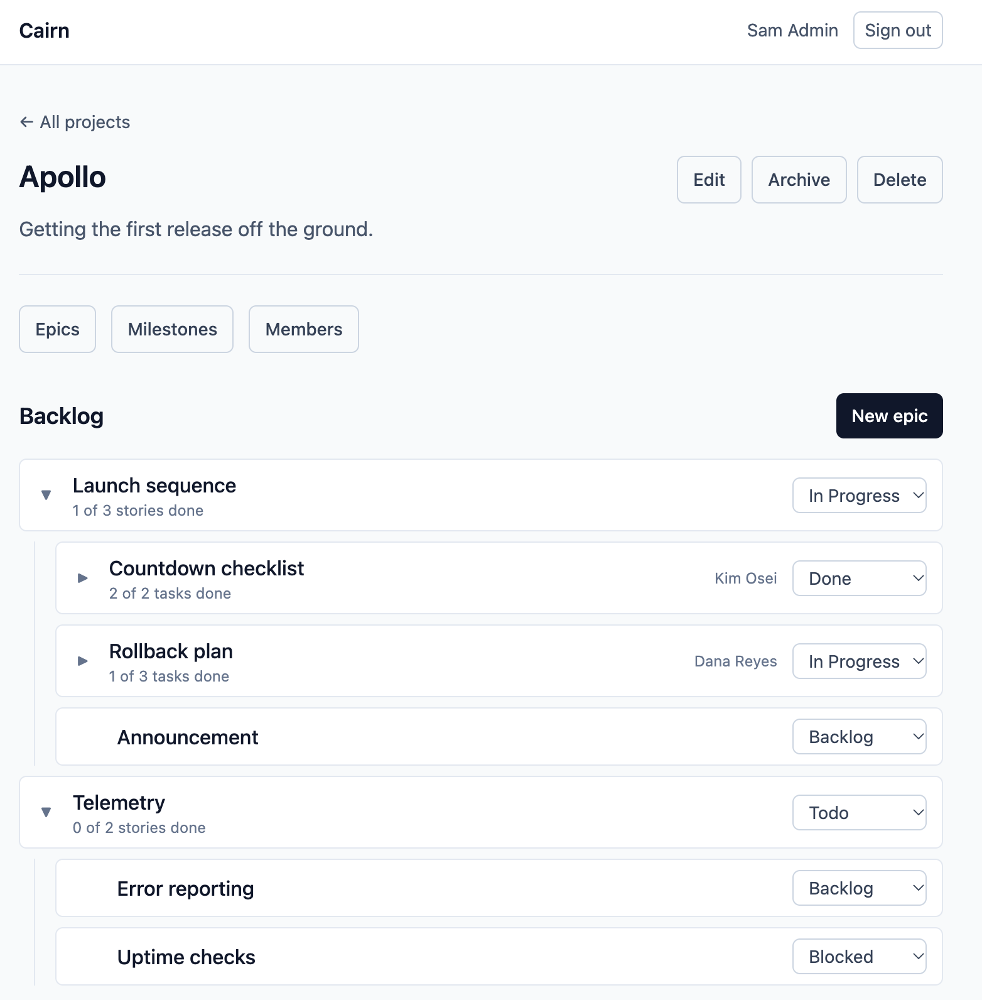
Open-source issue tracker
Cairn
A self-hosted tracker for epics, stories, and tasks.
Ruby on Rails
Hotwire
SQLite
Pundit
Minitest
Capybara
Implementation
I implemented project-level roles with Pundit, kept ownership transfers atomic, and wrote 449 automated tests for authorization and application behavior.
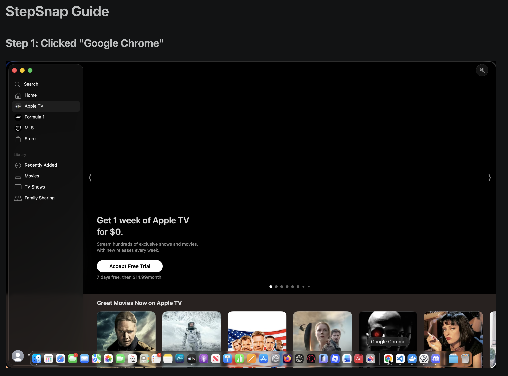
Native macOS app
StepSnap
A macOS menu bar app that turns a recorded workflow into a step-by-step guide with screenshots.
Swift
AppKit
ScreenCaptureKit
Accessibility API
XCTest
Implementation
Recording runs on the user’s Mac. I fixed a race between global click capture and menu handling and covered recording workflows with 52 XCTest cases.
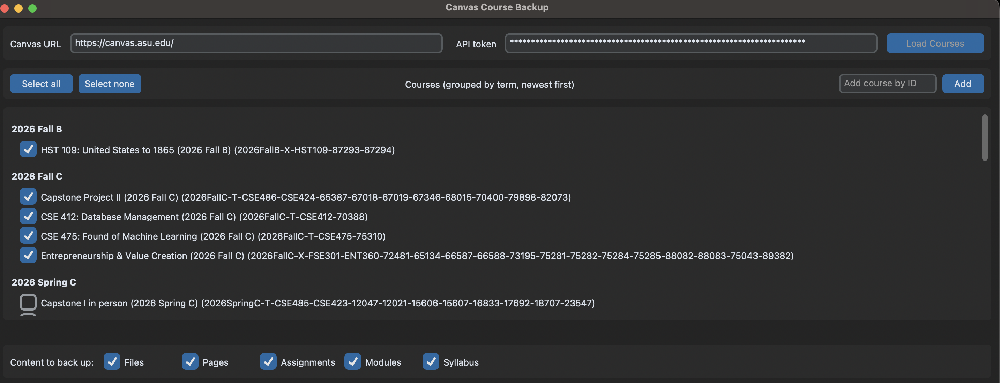
Desktop app
CourseBackup
A desktop app that saves Canvas course files and preserves their folder structure.
Python
CustomTkinter
REST API
Concurrency
Implementation
The app follows paginated API responses, downloads files on background threads, and redacts access tokens from logs and tracebacks.
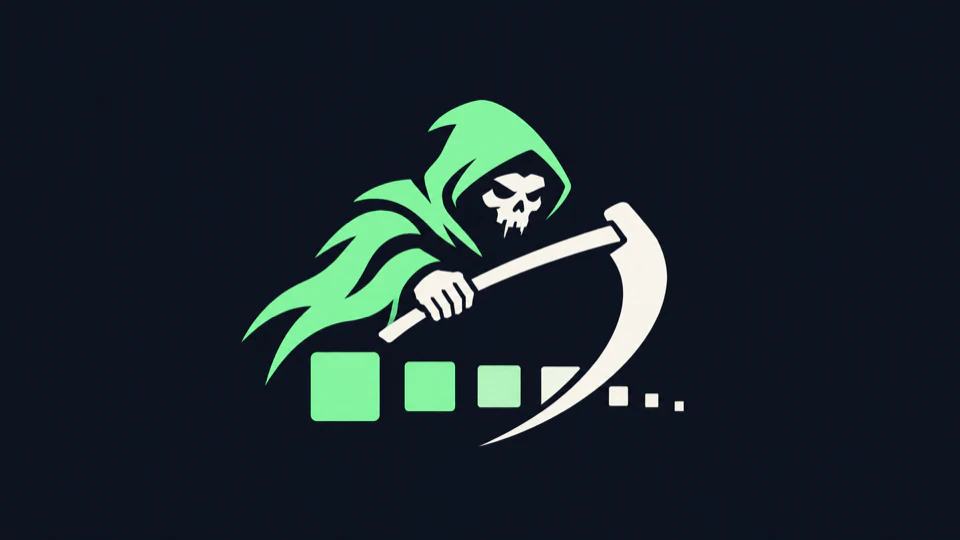
Operating systems coursework
ZombieReaper
A Linux kernel module that finds and cleans up zombie processes for a given user.
C
Linux Kernel
Concurrency
Semaphores
Implementation
Producer and consumer threads coordinate cleanup through a bounded buffer and semaphores, including during module unload.
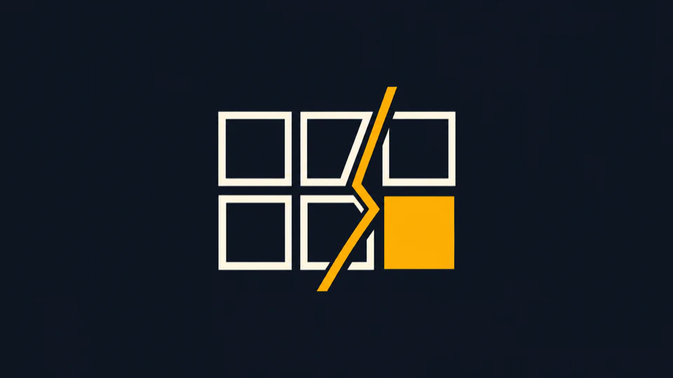
Operating systems coursework
Faultline
A Linux kernel module that exposes on-demand page allocation to user space through ioctl.
C
Linux Kernel
Virtual Memory
ioctl
Implementation
The module walks five levels of page tables and maps physical frames with the requested permissions. It handles x86-64 and ARM64 separately.
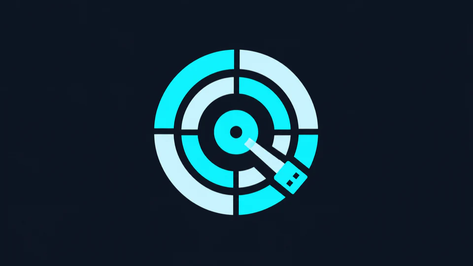
Operating systems coursework
Platter
A Linux kernel module that reads and writes a raw USB block device.
C
Linux Kernel
Block I/O
BIO
Implementation
The module converts byte offsets into sector addresses, checks device bounds, and submits synchronous block I/O requests.
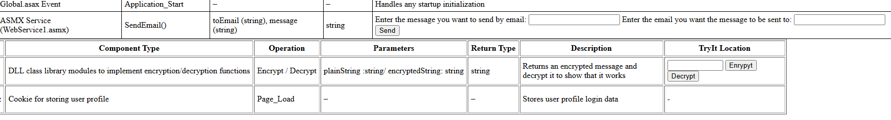
Distributed systems coursework
Skybrief
A deployed ASP.NET app that combines independently written services and libraries.
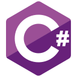
C#
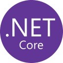
ASP.NET
ASMX Service
SOAP
WCF
SMTP
Implementation
I implemented SOAP contracts and an authenticated SMTP relay and integrated shared authentication and session state.
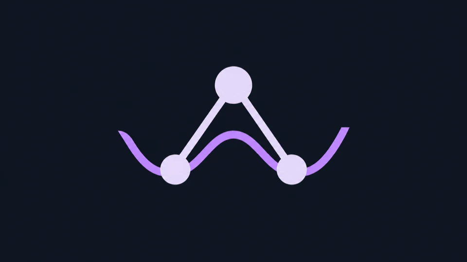
Compilers coursework
Polyroot
A C++ compiler for a small polynomial language.
C++
Recursive Descent
Syntax Trees
Memory Management
Implementation
A handwritten recursive descent parser builds a syntax tree that the compiler traverses to simplify and evaluate expressions.
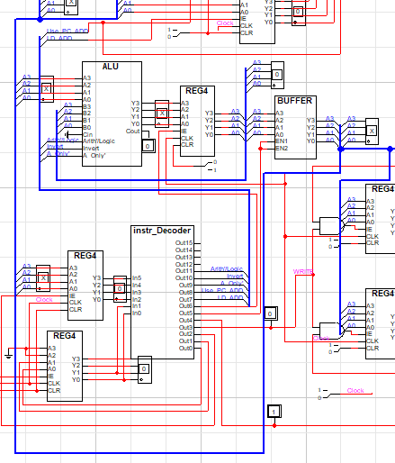
Digital design coursework
Cyclecore
A working 4-bit CPU built in LogicWorks.
LogicWorks
Digital Logic
CPU Architecture
Implementation
I designed the datapath and control logic around a program counter, an ALU, instruction and address decoders, and a shared tri-state bus.
Education
B.S. in Computer Science
Expected
Arizona State University
Relevant coursework: Machine Learning, Operating Systems, Distributed Systems, Compilers, Databases, Computer Organization, Digital Design, Discrete Mathematics, Software Engineering, and .NET.
Computer Science Coursework
Chandler-Gilbert Community College
Work Experience
Software Engineer (Capstone)
to present
Arizona State University · Can Crops
Integrated a coffee roast classifier into the Node.js API. Optimized it to run 9.4x faster on CPU without losing accuracy.
Software Engineer (Capstone)
to
Arizona State University · Can Crops
Built a bilingual coffee storefront and REST API on a three-person team so customers could browse products, check out, and track orders.
Undergraduate Teaching Assistant
to
Arizona State University · Software Engineering
Led exam reviews for 550+ first-year students on Java, object-oriented design, UML, JUnit, and design patterns.

 Python
Python FastAPI
FastAPI PostgreSQL
PostgreSQL